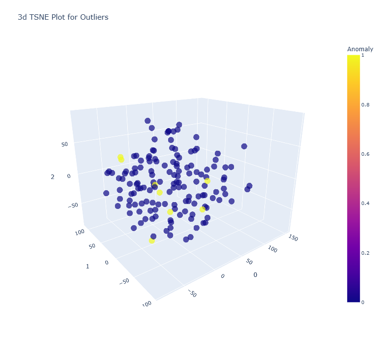
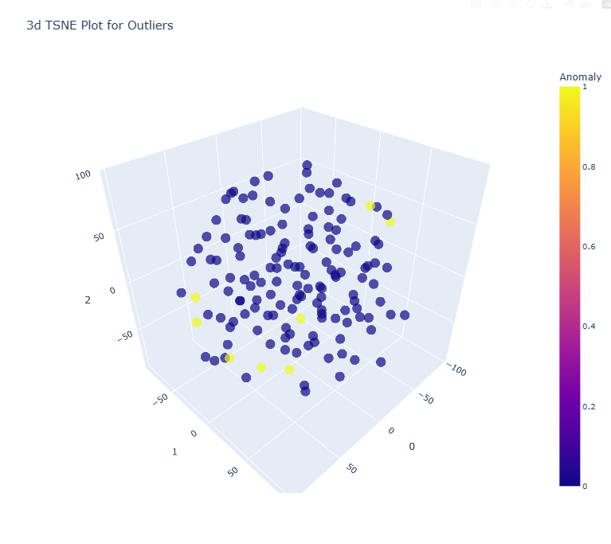
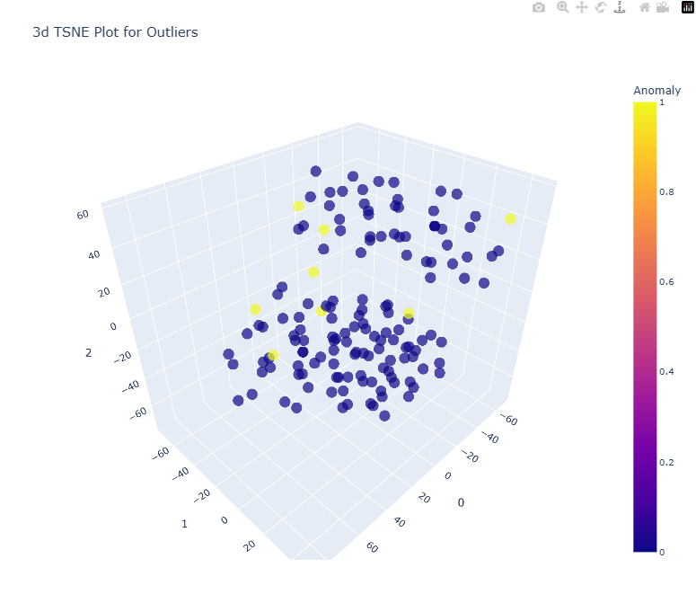
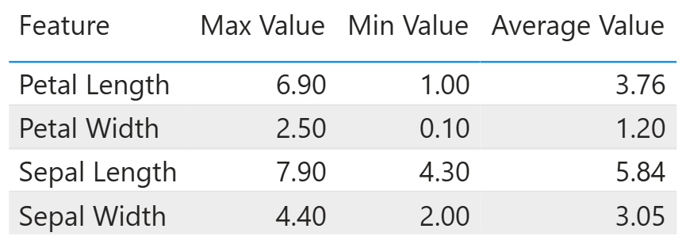
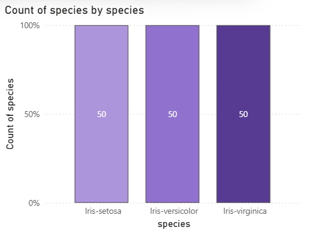

Data Ekplorasi#
Missing Value#
import pandas as pd
from module.dataTransformer import combineData
from module.fetcher import fetchDataMysql, fetchDataPg
data_pg = fetchDataPg("SELECT petal_length, petal_width, species FROM iris_table")
data_my = fetchDataMysql("SELECT sepal_length, sepal_width FROM iris_table")
iris_df = combineData(data1=data_my, data2=data_pg)
print("Missing Value:", iris_df.isnull().sum(), end="\n")
---------------------------------------------------------------------------
MySQLInterfaceError Traceback (most recent call last)
File C:\Python312\Lib\site-packages\mysql\connector\connection_cext.py:354, in CMySQLConnection._open_connection(self)
353 try:
--> 354 self._cmysql.connect(**cnx_kwargs)
355 self._cmysql.converter_str_fallback = self._converter_str_fallback
MySQLInterfaceError: Can't connect to MySQL server on 'localhost:3306' (10061)
The above exception was the direct cause of the following exception:
DatabaseError Traceback (most recent call last)
Cell In[1], line 6
3 from module.fetcher import fetchDataMysql, fetchDataPg
5 data_pg = fetchDataPg("SELECT petal_length, petal_width, species FROM iris_table")
----> 6 data_my = fetchDataMysql("SELECT sepal_length, sepal_width FROM iris_table")
8 iris_df = combineData(data1=data_my, data2=data_pg)
10 print("Missing Value:", iris_df.isnull().sum(), end="\n")
File D:\Matkul\Tugas_Matkul\Semester5\PSD\PSD\module\fetcher.py:17, in fetchDataMysql(query)
16 def fetchDataMysql(query):
---> 17 connection = mysqlConnection()
18 cursor = connection.cursor()
20 cursor.execute(query)
File D:\Matkul\Tugas_Matkul\Semester5\PSD\PSD\module\fetcher.py:5, in mysqlConnection()
4 def mysqlConnection():
----> 5 return myconnector.connect(
6 host="localhost",
7 port=3306,
8 user="root",
9 password="",
10 database="iris_db"
11 )
File C:\Python312\Lib\site-packages\mysql\connector\pooling.py:322, in connect(*args, **kwargs)
319 raise ImportError(ERROR_NO_CEXT)
321 if CMySQLConnection and not use_pure:
--> 322 return CMySQLConnection(*args, **kwargs)
323 return MySQLConnection(*args, **kwargs)
File C:\Python312\Lib\site-packages\mysql\connector\connection_cext.py:142, in CMySQLConnection.__init__(self, **kwargs)
140 if kwargs:
141 try:
--> 142 self.connect(**kwargs)
143 except Exception:
144 self.close()
File C:\Python312\Lib\site-packages\mysql\connector\abstracts.py:1604, in MySQLConnectionAbstract.connect(self, **kwargs)
1601 self.config(**kwargs)
1603 self.disconnect()
-> 1604 self._open_connection()
1606 charset, collation = (
1607 kwargs.pop("charset", None),
1608 kwargs.pop("collation", None),
1609 )
1610 if charset or collation:
File C:\Python312\Lib\site-packages\mysql\connector\connection_cext.py:360, in CMySQLConnection._open_connection(self)
358 except MySQLInterfaceError as err:
359 if hasattr(err, "errno"):
--> 360 raise get_mysql_exception(
361 err.errno, msg=err.msg, sqlstate=err.sqlstate
362 ) from err
363 raise InterfaceError(str(err)) from err
365 self._do_handshake()
DatabaseError: 2003 (HY000): Can't connect to MySQL server on 'localhost:3306' (10061)
Outlier#
Mengecualikan kolom species#
numeric_iris_data = iris_df[['sepal_length', 'sepal_width', 'petal_length', 'petal_width']].astype(float)
numeric_iris_data
| sepal_length | sepal_width | petal_length | petal_width | |
|---|---|---|---|---|
| 0 | 5.1 | 3.5 | 1.4 | 0.2 |
| 1 | 4.9 | 3.0 | 1.4 | 0.2 |
| 2 | 4.7 | 3.2 | 1.3 | 0.2 |
| 3 | 4.6 | 3.1 | 1.5 | 0.2 |
| 4 | 5.0 | 3.6 | 1.4 | 0.2 |
| ... | ... | ... | ... | ... |
| 145 | 6.7 | 3.0 | 5.2 | 2.3 |
| 146 | 6.3 | 2.5 | 5.0 | 1.9 |
| 147 | 6.5 | 3.0 | 5.2 | 2.0 |
| 148 | 6.2 | 3.4 | 5.4 | 2.3 |
| 149 | 5.9 | 3.0 | 5.1 | 1.8 |
150 rows × 4 columns
Outliers Detection Dengan (ABOD)#
ABOD adalah metode yang sangat berguna untuk mendeteksi outlier dalam data berdimensi tinggi. Ide utamanya adalah bahwa titik data normal membentuk berbagai macam sudut dengan tetangganya, sedangkan outlier cenderung membentuk sudut yang lebih kecil dan konsisten dengan titik-titik lain. Hal ini karena outlier berada di “ujung” atau pinggiran data, sehingga sudut yang terbentuk antara sebuah outlier dengan dua titik lainnya akan sangat sempit.
Langkah Langkah:
hitung seluruh vektor dari titik pi ke titik lainya
\(\vec{v}_{ij} = p_j - p_i\)hitung sudut pasangan vector
\(\cos(\theta_{ijk})=\frac{\vec{v}_{ij}\cdot\vec{v}_{ik}}{\|\vec{v}_{ij}\|\cdot\|\vec{v}_{ik}\|}\)Varian Suduh
\(\text{ABOD}(p_i)=\text{Var}(\theta_{ijk})\quad\text{untuk semua }j,k\neq i\)
Titik dengan Varian tertinggi adalah Outlier
Menyiapkan model (ABOD)#
from pycaret.anomaly import *
from pycaret.anomaly import *
s = setup(data=numeric_iris_data)
abod_model = create_model("abod", fraction=0.05)
df_abod = assign_model(abod_model)
| Description | Value | |
|---|---|---|
| 0 | Session id | 6412 |
| 1 | Original data shape | (150, 4) |
| 2 | Transformed data shape | (150, 4) |
| 3 | Numeric features | 4 |
| 4 | Preprocess | True |
| 5 | Imputation type | simple |
| 6 | Numeric imputation | mean |
| 7 | Categorical imputation | mode |
| 8 | CPU Jobs | -1 |
| 9 | Use GPU | False |
| 10 | Log Experiment | False |
| 11 | Experiment Name | anomaly-default-name |
| 12 | USI | 24c9 |
Data di anggap Outliers#
outliers = df_abod[df_abod["Anomaly"] == 1]
print(outliers.shape)
outliers
(8, 6)
| sepal_length | sepal_width | petal_length | petal_width | Anomaly | Anomaly_Score | |
|---|---|---|---|---|---|---|
| 41 | 4.5 | 2.3 | 1.3 | 0.3 | 1 | -0.088998 |
| 62 | 6.0 | 2.2 | 4.0 | 1.0 | 1 | -0.289391 |
| 100 | 6.3 | 3.3 | 6.0 | 2.5 | 1 | -0.364475 |
| 106 | 4.9 | 2.5 | 4.5 | 1.7 | 1 | -0.050388 |
| 108 | 6.7 | 2.5 | 5.8 | 1.8 | 1 | -0.084224 |
| 117 | 7.7 | 3.8 | 6.7 | 2.2 | 1 | -0.129286 |
| 131 | 7.9 | 3.8 | 6.4 | 2.0 | 1 | -0.137417 |
| 134 | 6.1 | 2.6 | 5.6 | 1.4 | 1 | -0.309969 |
Dataframe ABOD#
jika nilai Anomaly 1 menunjukan data sebagai outlier
iris_abod = df_abod.merge(iris_df["species"], left_index=True, right_index=True)
iris_abod
| sepal_length | sepal_width | petal_length | petal_width | Anomaly | Anomaly_Score | species | |
|---|---|---|---|---|---|---|---|
| 0 | 5.1 | 3.5 | 1.4 | 0.2 | 0 | -556.251421 | Iris-setosa |
| 1 | 4.9 | 3.0 | 1.4 | 0.2 | 0 | -400.000928 | Iris-setosa |
| 2 | 4.7 | 3.2 | 1.3 | 0.2 | 0 | -93.421993 | Iris-setosa |
| 3 | 4.6 | 3.1 | 1.5 | 0.2 | 0 | -99.229221 | Iris-setosa |
| 4 | 5.0 | 3.6 | 1.4 | 0.2 | 0 | -82.176201 | Iris-setosa |
| ... | ... | ... | ... | ... | ... | ... | ... |
| 145 | 6.7 | 3.0 | 5.2 | 2.3 | 0 | -13.831461 | Iris-virginica |
| 146 | 6.3 | 2.5 | 5.0 | 1.9 | 0 | -9.110201 | Iris-virginica |
| 147 | 6.5 | 3.0 | 5.2 | 2.0 | 0 | -20.571707 | Iris-virginica |
| 148 | 6.2 | 3.4 | 5.4 | 2.3 | 0 | -6.345400 | Iris-virginica |
| 149 | 5.9 | 3.0 | 5.1 | 1.8 | 0 | -28.205616 | Iris-virginica |
150 rows × 7 columns
plot_model(abod_model, plot = 'tsne')

Outliers Detection Dengan (KNN)#
Metode ini adalah salah satu yang paling sederhana dan intuitif untuk deteksi outlier. Pendekatan ini didasarkan pada asumsi bahwa outlier adalah titik data yang letaknya jauh dari sebagian besar titik lainnya. Untuk mendeteksinya, algoritma KNN mengukur jarak dari sebuah titik ke k tetangga terdekatnya. Jika jarak rata-rata ke tetangga-tetangga tersebut sangat besar, titik itu dianggap sebagai outlier.
Langkah Langkah:
Tentukan Nilai K
Hitung jarak titik xi ke titik lain menggunakan Euclidean Distance dan ambil K jarak terkecil
\(d(x_i,x_j)=\sqrt{\sum_{k=1}^{n}(x_{ik}-x_{jk})^2}\)hitung KNN distance \(\text{KNN-Distance}(x_i)=\text{rata-rata jarak ke K tetangga terdekat}\)
Titik dengan KNN-Distance tertinggi dianggap anomali.
Menyiapkan Model KNN#
s = setup(data=numeric_iris_data)
knn_model = create_model('knn', fraction=0.05)
knn_df = assign_model(knn_model)
| Description | Value | |
|---|---|---|
| 0 | Session id | 3520 |
| 1 | Original data shape | (150, 4) |
| 2 | Transformed data shape | (150, 4) |
| 3 | Numeric features | 4 |
| 4 | Preprocess | True |
| 5 | Imputation type | simple |
| 6 | Numeric imputation | mean |
| 7 | Categorical imputation | mode |
| 8 | CPU Jobs | -1 |
| 9 | Use GPU | False |
| 10 | Log Experiment | False |
| 11 | Experiment Name | anomaly-default-name |
| 12 | USI | dcb4 |
Data Dianggap Outlier#
outliers = knn_df[knn_df["Anomaly"] == 1]
print(outliers.shape)
outliers
(8, 6)
| sepal_length | sepal_width | petal_length | petal_width | Anomaly | Anomaly_Score | |
|---|---|---|---|---|---|---|
| 41 | 4.5 | 2.3 | 1.3 | 0.3 | 1 | 0.793726 |
| 57 | 4.9 | 2.4 | 3.3 | 1.0 | 1 | 0.787401 |
| 98 | 5.1 | 2.5 | 3.0 | 1.1 | 1 | 0.818535 |
| 106 | 4.9 | 2.5 | 4.5 | 1.7 | 1 | 0.883176 |
| 109 | 7.2 | 3.6 | 6.1 | 2.5 | 1 | 0.806226 |
| 117 | 7.7 | 3.8 | 6.7 | 2.2 | 1 | 1.019804 |
| 118 | 7.7 | 2.6 | 6.9 | 2.3 | 1 | 0.964365 |
| 131 | 7.9 | 3.8 | 6.4 | 2.0 | 1 | 1.024695 |
Dataframe knn#
knn_df = knn_df.merge(iris_df["species"], left_index=True, right_index=True)
knn_df
| sepal_length | sepal_width | petal_length | petal_width | Anomaly | Anomaly_Score | species | |
|---|---|---|---|---|---|---|---|
| 0 | 5.1 | 3.5 | 1.4 | 0.2 | 0 | 0.141421 | Iris-setosa |
| 1 | 4.9 | 3.0 | 1.4 | 0.2 | 0 | 0.173205 | Iris-setosa |
| 2 | 4.7 | 3.2 | 1.3 | 0.2 | 0 | 0.264575 | Iris-setosa |
| 3 | 4.6 | 3.1 | 1.5 | 0.2 | 0 | 0.264575 | Iris-setosa |
| 4 | 5.0 | 3.6 | 1.4 | 0.2 | 0 | 0.244949 | Iris-setosa |
| ... | ... | ... | ... | ... | ... | ... | ... |
| 145 | 6.7 | 3.0 | 5.2 | 2.3 | 0 | 0.374166 | Iris-virginica |
| 146 | 6.3 | 2.5 | 5.0 | 1.9 | 0 | 0.479583 | Iris-virginica |
| 147 | 6.5 | 3.0 | 5.2 | 2.0 | 0 | 0.387298 | Iris-virginica |
| 148 | 6.2 | 3.4 | 5.4 | 2.3 | 0 | 0.624500 | Iris-virginica |
| 149 | 5.9 | 3.0 | 5.1 | 1.8 | 0 | 0.360555 | Iris-virginica |
150 rows × 7 columns
plot_model(knn_model, plot = 'tsne')

Outliers Detection dengan (LOF)#
LOF mengatasi keterbatasan KNN dengan memperkenalkan konsep kepadatan lokal. Alih-alih hanya mengandalkan jarak, LOF membandingkan kepadatan sebuah titik dengan kepadatan tetangganya. Titik data dianggap sebagai outlier jika kepadatan di sekitarnya secara signifikan lebih rendah daripada kepadatan di sekitar tetangga-tetangganya.
Langkah Langkah:
Tentukan Nilai K
Hitung jarak titik xi ke titik lain menggunakan Euclidean Distance dan ambil K jarak terkecil
\(d(x_i,x_j)=\sqrt{\sum_{k=1}^{n}(x_{ik}-x_{jk})^2}\)Hitung reachability distance dari titik A ke titik B: \(\text{reach-dist}_k(A,B)=\max(\text{k-distance}(B),d(A,B))\)
Hitung local reachability density (lrd) dari titik A: \(\text{lrd}_k(A)=\frac{1}{\frac{\sum_{B \in N_k(A)} \text{reach-dist}_k(A,B)}{|N_k(A)|}}\)
Hitung LOF score dari titik A: \(\text{LOF}_k(A)=\frac{\sum_{B \in N_k(A)} \frac{\text{lrd}_k(B)}{\text{lrd}_k(A)}}{|N_k(A)|}\)
Interpretasi LOF:
LOF ≈ 1: kerapatan mirip tetangga → normal
LOF >> 1: kerapatan jauh lebih rendah → anomali
LOF << 1: lebih padat daripada tetangga → kemungkinan cluster dalam
Menyiapkan model LOF#
s = setup(data=numeric_iris_data)
lof_model = create_model("lof", fraction=0.05)
lof_df = assign_model(lof_model)
| Description | Value | |
|---|---|---|
| 0 | Session id | 5095 |
| 1 | Original data shape | (150, 4) |
| 2 | Transformed data shape | (150, 4) |
| 3 | Numeric features | 4 |
| 4 | Preprocess | True |
| 5 | Imputation type | simple |
| 6 | Numeric imputation | mean |
| 7 | Categorical imputation | mode |
| 8 | CPU Jobs | -1 |
| 9 | Use GPU | False |
| 10 | Log Experiment | False |
| 11 | Experiment Name | anomaly-default-name |
| 12 | USI | 786f |
Data Outliers#
outliers = lof_df[lof_df["Anomaly"] == 1]
print(outliers.shape)
outliers
(8, 6)
| sepal_length | sepal_width | petal_length | petal_width | Anomaly | Anomaly_Score | |
|---|---|---|---|---|---|---|
| 14 | 5.8 | 4.0 | 1.2 | 0.2 | 1 | 1.463125 |
| 15 | 5.7 | 4.4 | 1.5 | 0.4 | 1 | 1.653626 |
| 41 | 4.5 | 2.3 | 1.3 | 0.3 | 1 | 1.777233 |
| 98 | 5.1 | 2.5 | 3.0 | 1.1 | 1 | 1.511868 |
| 117 | 7.7 | 3.8 | 6.7 | 2.2 | 1 | 1.572990 |
| 118 | 7.7 | 2.6 | 6.9 | 2.3 | 1 | 1.624653 |
| 122 | 7.7 | 2.8 | 6.7 | 2.0 | 1 | 1.491365 |
| 131 | 7.9 | 3.8 | 6.4 | 2.0 | 1 | 1.547288 |
lof Dataframe#
lof_df = lof_df.merge(iris_df["species"], left_index=True, right_index=True)
lof_df
| sepal_length | sepal_width | petal_length | petal_width | Anomaly | Anomaly_Score | species | |
|---|---|---|---|---|---|---|---|
| 0 | 5.1 | 3.5 | 1.4 | 0.2 | 0 | 0.976302 | Iris-setosa |
| 1 | 4.9 | 3.0 | 1.4 | 0.2 | 0 | 1.008758 | Iris-setosa |
| 2 | 4.7 | 3.2 | 1.3 | 0.2 | 0 | 1.019841 | Iris-setosa |
| 3 | 4.6 | 3.1 | 1.5 | 0.2 | 0 | 1.049882 | Iris-setosa |
| 4 | 5.0 | 3.6 | 1.4 | 0.2 | 0 | 0.958473 | Iris-setosa |
| ... | ... | ... | ... | ... | ... | ... | ... |
| 145 | 6.7 | 3.0 | 5.2 | 2.3 | 0 | 0.978474 | Iris-virginica |
| 146 | 6.3 | 2.5 | 5.0 | 1.9 | 0 | 1.004232 | Iris-virginica |
| 147 | 6.5 | 3.0 | 5.2 | 2.0 | 0 | 0.980847 | Iris-virginica |
| 148 | 6.2 | 3.4 | 5.4 | 2.3 | 0 | 1.021819 | Iris-virginica |
| 149 | 5.9 | 3.0 | 5.1 | 1.8 | 0 | 1.011326 | Iris-virginica |
150 rows × 7 columns
plot_model(lof_model, plot='tsne')

Min, Max dan Average Setiap Kolom#
Tabel berikut menampilkan nilai maksimum (Max Value), minimum (Min Value), dan rata-rata (Average Value) dari setiap fitur pada dataset Iris:

Interpretasi#
Petal Length memiliki rentang yang cukup lebar (1.00 – 6.90) dengan rata-rata 3.76.
Petal Width bervariasi dari 0.10 hingga 2.50, dengan rata-rata 1.20.
Sepal Length memiliki nilai rata-rata paling tinggi (5.84) dibandingkan fitur lain.
Sepal Width berada pada kisaran 2.00 – 4.40 dengan rata-rata 3.05.
Dari ringkasan statistik ini dapat dilihat bahwa petal memiliki variasi lebih besar dibandingkan sepal, sehingga kemungkinan besar akan berperan penting dalam membedakan kelas spesies bunga Iris.
Distribusi Kelas#
Visualisasi berikut menunjukkan jumlah data pada masing-masing kelas:
Iris-setosa: 50 data
Iris-versicolor: 50 data
Iris-virginica: 50 data
Total dataset terdiri dari 150 data yang terbagi seimbang antar ketiga kelas.

Interpretasi:
Dataset seimbang (balanced) karena setiap kelas memiliki jumlah data yang sama.
Hal ini menguntungkan untuk proses klasifikasi, karena model tidak akan bias terhadap salah satu kelas.